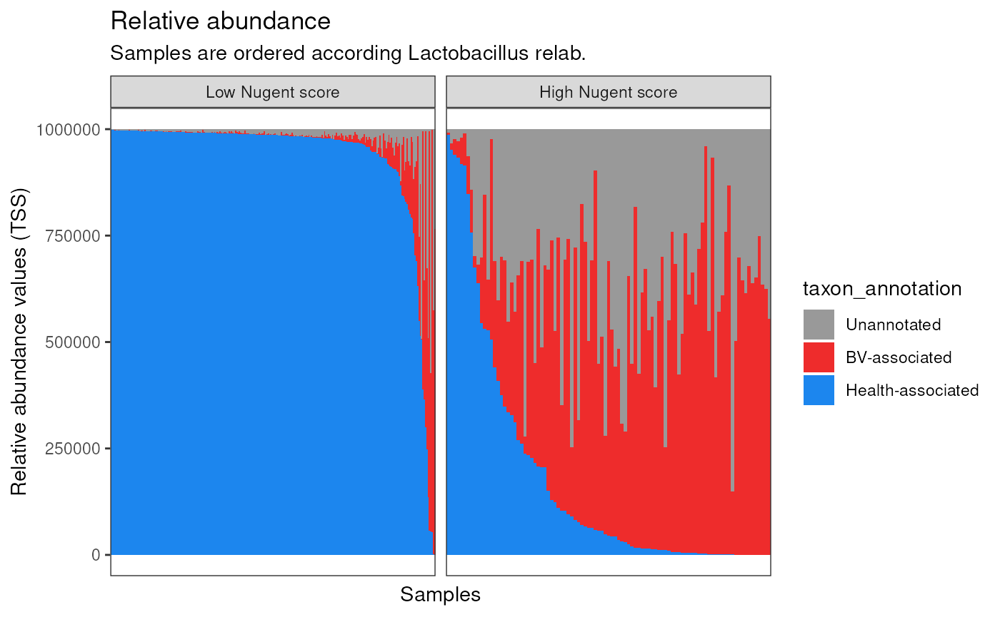
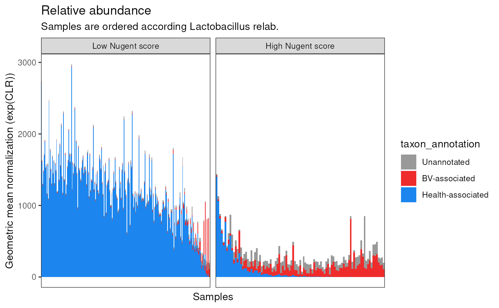

Bacterial vaginosis vs healthy vaginal samples (OTU)
Ravel_2011_16S_BV
Samuel Gamboa
17 April, 2025
Source:vignettes/articles/Ravel_2011_16S_BV.Rmd
Ravel_2011_16S_BV.Rmd
library(MicrobiomeBenchmarkDataAnalyses)
library(MicrobiomeBenchmarkData)
library(mia)
library(phyloseq)
library(dplyr)
library(benchdamic)
library(purrr)
library(ggplot2)
library(gridExtra)
library(ggpubr)
library(tidySummarizedExperiment)Data
dat_name <- 'Ravel_2011_16S_BV'
conditions_col <- 'study_condition'
conditions <- c(condB = 'healthy', condA = 'bacterial_vaginosis')
tse <- getBenchmarkData(dat_name, dryrun = FALSE)[[1]]
tse
#> class: TreeSummarizedExperiment
#> dim: 247 394
#> metadata(0):
#> assays(1): counts
#> rownames(247): Lactobacillus iners Lactobacillus crispatus ...
#> Bacilli_2 Microbacterium
#> rowData names(7): kingdom class ... species taxon_annotation
#> colnames(394): S001 S002 ... S393 S394
#> colData names(17): dataset gender ... nugent_score_category
#> community_group
#> reducedDimNames(0):
#> mainExpName: NULL
#> altExpNames(0):
#> rowLinks: NULL
#> rowTree: NULL
#> colLinks: NULL
#> colTree: NULLSelect samples with low and high Nugent scores only:
select_samples <- which(colData(tse)$study_condition %in% conditions)
tse_subset <- tse[, select_samples]
tse_subset
#> class: TreeSummarizedExperiment
#> dim: 247 345
#> metadata(0):
#> assays(1): counts
#> rownames(247): Lactobacillus iners Lactobacillus crispatus ...
#> Bacilli_2 Microbacterium
#> rowData names(7): kingdom class ... species taxon_annotation
#> colnames(345): S001 S002 ... S393 S394
#> colData names(17): dataset gender ... nugent_score_category
#> community_group
#> reducedDimNames(0):
#> mainExpName: NULL
#> altExpNames(0):
#> rowLinks: NULL
#> rowTree: NULL
#> colLinks: NULL
#> colTree: NULLAgglomerate by genus:
## all(colSums(assay(tse_subset)) == colSums(assay(tse_genus)))
## the code in the line above should be TRUE before filtering
tse_genus <- agglomerateByRank(
tse_subset, rank = 'genus', na.rm = FALSE, onRankOnly = FALSE
) |>
filterTaxa(min_ab = 1, min_per = 0.2) |>
{\(y) magrittr::set_rownames(y, editMiaTaxaNames(y))}()
colData(tse_genus)$study_condition <-
factor(colData(tse_genus)$study_condition, levels = conditions)
tse_genus
#> class: TreeSummarizedExperiment
#> dim: 30 345
#> metadata(1): agglomerated_by_rank
#> assays(1): counts
#> rownames(30): genus:Mobiluncus genus:Gardnerella ... genus:Parvimonas
#> genus:Peptoniphilus
#> rowData names(7): kingdom class ... species taxon_annotation
#> colnames(345): S001 S002 ... S393 S394
#> colData names(17): dataset gender ... nugent_score_category
#> community_group
#> reducedDimNames(0):
#> mainExpName: NULL
#> altExpNames(0):
#> rowLinks: NULL
#> rowTree: NULL
#> colLinks: NULL
#> colTree: NULLSample counts per condition:
col_data <- as_tibble(colData(tse_genus))
col_data |>
summarise(
.by = c(
"nugent_score_category", "study_condition"
),
range = paste0(min(nugent_score), "-", max(nugent_score)),
n = n()
) |>
arrange(study_condition, n) |>
relocate(study_condition, n)
#> # A tibble: 2 × 4
#> study_condition n nugent_score_category range
#> <fct> <int> <chr> <chr>
#> 1 healthy 248 low 0-3
#> 2 bacterial_vaginosis 97 high 7-10Prior info (biological annotations)
prior_info <- tse_genus |>
rowData() |>
as.data.frame() |>
dplyr::select(genus, taxon_annotation) |>
rename(taxon_name = genus) |>
mutate(
taxon_annotation = case_when(
is.na(taxon_annotation) ~ "Unannotated",
TRUE ~ taxon_annotation
)
)
head(prior_info)
#> taxon_name taxon_annotation
#> genus:Mobiluncus Mobiluncus bv-associated
#> genus:Gardnerella Gardnerella bv-associated
#> genus:Corynebacterium Corynebacterium bv-associated
#> genus:Gemella Gemella bv-associated
#> genus:Staphylococcus Staphylococcus bv-associated
#> genus:Aerococcus Aerococcus bv-associatedDA analysis
Convert to phyloseq:
ps <- convertToPhyloseq(tse_genus)
sample_data(ps)[[conditions_col]] <-
factor(sample_data(ps)[[conditions_col]], levels = conditions)Set method parameters:
norm_methods <- set_norm_list()
ps <- runNormalizations(norm_methods, ps, verbose = FALSE)
zw <- weights_ZINB(ps, design = conditions_col)
DA_methods <- set_DA_methods_list(conditions_col, conditions)
for (i in seq_along(DA_methods)) {
if (grepl("Seurat", names(DA_methods)[i])) {
names(DA_methods[[i]]$contrast) <- NULL
} else {
next
}
}
names(DA_methods)
#> [1] "edgeR.TMM" "edgeR.TMM.w" "DESeq2.poscounts"
#> [4] "DESeq2.poscounts.w" "Limma-Voom.TMM" "Limma-Voom.TMM.w"
#> [7] "metagenomeSeq.CSS" "ALDEx2-Wilcox" "MAST"
#> [10] "Seurat-Wilcox" "ANCOM-BC" "Wilcox.TSS"
#> [13] "Wilcox.CLR" "ZINQ.TSS" "ZINQ.CLR"
#> [16] "LEfSe.TSS" "LEfSe.CLR"Run DA analysis:
tim <- system.time({
DA_output <- imap(DA_methods, ~ {
message("Running method ", .y, " - ", Sys.time())
tryCatch(
error = function(e) NULL,
runDA(list(.x), ps, weights = zw, verbose = FALSE)
)
}) |>
list_flatten(name_spec = "{outer}") |>
discard(is.null)
DA_output <- map2(DA_output, names(DA_output), ~ {
.x$name <- .y
.x
})
})
tim
#> user system elapsed
#> 14.349 0.981 14.386Enrichment
Set threshold variables:
direction <- get_direction_cols(DA_output, conditions_col, conditions)
adjThr<- rep(0.1, length(DA_output))
names(adjThr) <- names(DA_output)
esThr <- case_when(
grepl("lefse.TSS", names(DA_output)) ~ 2,
grepl("lefse.CLR", names(DA_output)) ~ median(DA_output$LEfSe.CLR$statInfo$abs_score),
TRUE ~ 0
) |>
set_names(names(DA_output))
slotV <- ifelse(grepl("lefse", names(DA_output)), "statInfo", "pValMat")
colNameV <- ifelse(grepl("lefse", names(DA_output)), "LDA_scores", "adjP")
typeV <- ifelse(grepl("lefse", names(DA_output)), "logfc", "pvalue")Run enrichment analysis:
enrichment <- createEnrichment(
object = DA_output,
priorKnowledge = prior_info,
enrichmentCol = "taxon_annotation",
namesCol = "taxon_name",
slot = slotV, colName = colNameV, type = typeV,
direction = direction,
threshold_pvalue = adjThr,
threshold_logfc = esThr,
top = NULL, # No top feature selected
alternative = "greater",
verbose = FALSE
)Create enrichment summary:
enrichmentSummary <- purrr::map(enrichment, ~ {
.x$summaries |>
purrr::map(function(x) {
x |>
tibble::rownames_to_column(var = "direction") |>
tidyr::pivot_longer(
names_to = "annotation", values_to = "n",
cols = 2
)
}) |>
dplyr::bind_rows() |>
dplyr::relocate(pvalue)
}) |>
dplyr::bind_rows(.id = "method") |>
dplyr::mutate(
sig = dplyr::case_when(
pvalue < 0.05 & pvalue > 0.01 ~ "*",
pvalue < 0.01 & pvalue > 0.001 ~ "**",
pvalue < 0.001 ~ "***",
TRUE ~ ""
)
) |>
dplyr::mutate(
direction = dplyr::case_when(
direction == "DOWN Abundant" ~ "HV",
direction == "UP Abundant" ~ "BV",
TRUE ~ direction
)
)Create enrichment plot:
enPlot <- enrichmentSummary |>
dplyr::left_join(getMethodClass(), by = "method") |>
filter(annotation != "Unannotated") |>
mutate(
direction = factor(direction, levels = c("BV", "HV"))
) |>
mutate(
annotation = case_when(
annotation == "bv-associated" ~ "BV-associated",
annotation == "hv-associated" ~ "HV-associated"
) |>
forcats::fct_relevel("BV-associated")
) |>
ggplot(aes(method, n)) +
geom_col(
aes(fill = annotation),
position = position_dodge2(width = 0.9)
) +
geom_text(
aes(label = sig, color = annotation),
position = position_dodge2(width = 0.9)
) +
facet_grid(
direction ~ method_class, scales = "free_x", space = "free"
) +
scale_y_continuous(breaks = pretty) +
scale_fill_discrete(name = "Feature annotations") +
scale_color_discrete(name = "Feature annotations") +
labs(
x = "DA method", y = "Number of DAFs"
) +
theme_bw() +
theme(
axis.text.x = element_text(angle = 45, hjust = 1),
legend.position = "bottom",
strip.background = element_rect(fill = "white")
)Plot putative true positves and true negatives ratio
Create ‘positives’ object. No thresholds were added.
positives <- map(1:length(DA_output), .f = function(i) {
positives <- createPositives(
object = DA_output[i],
priorKnowledge = prior_info,
enrichmentCol = "taxon_annotation", namesCol = "taxon_name",
slot = slotV[i], colName = colNameV[i], type = typeV[i],
direction = direction[i],
threshold_pvalue = 1,
threshold_logfc = 0,
top = seq.int(from = 2, to = 20, by = 2),
alternative = "greater",
verbose = FALSE,
TP = list(c("DOWN Abundant", "hv-associated"), c("UP Abundant", "bv-associated")),
FP = list(c("DOWN Abundant", "bv-associated"), c("UP Abundant", "hv-associated"))
) |>
dplyr::left_join(getMethodClass(), by = 'method')
}) |>
bind_rows()Create “positives” plot:
vec <- positives$color
names(vec) <- positives$base_method
posPlot <- positives |>
mutate(diff = TP - FP) |>
ggplot(aes(top, diff)) +
geom_line(
aes(
group = method, color = base_method, linetype = norm,
),
) +
geom_point(
aes(
color = base_method, shape = norm
),
) +
facet_wrap(~method_class, nrow = 1) +
labs(
x = "Top DAFs", y = "TP - FP"
) +
scale_shape(name = "Normalization") +
scale_linetype(name = "Normalization") +
scale_color_manual(values = vec, name = "Base DA method") +
theme_bw() +
theme(
legend.position = "bottom",
strip.background = element_rect(fill = "white")
)Combine enrichment and “positives” plot:

Perform DA with lefse and Wilcox
Convert the TSE to tibble:
tssFun <- function(x) {
(x) / sum(x) * 1e6
}
clrFun <- function(x) {
log(x / exp(mean(log(x))))
}
assay(tse_genus, "TSS") <- apply(assay(tse_genus, "counts"), 2, tssFun)
assay(tse_genus, "CLR") <- apply(assay(tse_genus, "counts") + 1, 2, clrFun)
data <- tse_genus |>
as_tibble() |>
rename(taxon_name = .feature, sample = .sample) |>
mutate(
taxon_annotation = ifelse(
is.na(taxon_annotation), 'Unannotated', taxon_annotation
)
)
head(data)
#> # A tibble: 6 × 29
#> taxon_name sample counts TSS CLR dataset gender body_site ncbi_accession
#> <chr> <chr> <dbl> <dbl> <dbl> <chr> <chr> <chr> <chr>
#> 1 genus:Mobi… S001 0 0 -0.424 Ravel_… female vagina SRR062670
#> 2 genus:Gard… S001 0 0 -0.424 Ravel_… female vagina SRR062670
#> 3 genus:Cory… S001 0 0 -0.424 Ravel_… female vagina SRR062670
#> 4 genus:Geme… S001 0 0 -0.424 Ravel_… female vagina SRR062670
#> 5 genus:Stap… S001 0 0 -0.424 Ravel_… female vagina SRR062670
#> 6 genus:Aero… S001 0 0 -0.424 Ravel_… female vagina SRR062670
#> # ℹ 20 more variables: library_size <dbl>, sequencing_platform <chr>,
#> # pmid <dbl>, study_condition <fct>, sequencing_method <chr>,
#> # variable_region_16s <chr>, country <chr>, number_bases <dbl>,
#> # ethnicity <chr>, ph <dbl>, nugent_score <dbl>, nugent_score_category <chr>,
#> # community_group <chr>, kingdom <chr>, class <chr>, order <chr>,
#> # family <chr>, genus <chr>, species <chr>, taxon_annotation <chr>Wilcox
Define function:
calcWilcox <- function(dat, val_col, log = FALSE) {
taxa <- split(dat, factor(dat$taxon_name))
taxa_names <- names(taxa)
taxa_annotations <- data |>
dplyr::select(tidyselect::starts_with('taxon')) |>
dplyr::distinct()
pvalues <- vector('double', length(taxa))
names(pvalues) <- taxa_names
formula_chr <- paste0(val_col, ' ~ study_condition')
for (i in seq_along(pvalues)) {
df <- taxa[[i]]
res <- stats::wilcox.test(formula = as.formula(formula_chr), data = df)
pvalues[[i]] <- res$p.value
}
adj_pvalues <- stats::p.adjust(pvalues, method = 'fdr')
log_fold_change <- vector('double', length(taxa))
lll <- vector('double', length(taxa))
for (i in seq_along(log_fold_change)) {
df <- taxa[[i]]
healthy <- df |>
dplyr::filter(study_condition == 'healthy') |>
{\(y) y[[val_col]]}()
bv <- df |>
dplyr::filter(study_condition == 'bacterial_vaginosis') |>
{\(y) y[[val_col]]}()
bv <- mean(bv)
healthy <- mean(healthy)
if (log) {
log_fold_change[i] <- bv - healthy
} else {
if (bv >= healthy) { # control is healthy, condition of interest is bv
log_fold_change[i] <- log2(bv / healthy)
} else if (bv < healthy) {
log_fold_change[i] <- -log2(healthy / bv)
}
}
}
pval_results <- data.frame(
taxon_name = taxa_names,
rawP = pvalues,
adjP = adj_pvalues,
logFC = log_fold_change
)
dplyr::left_join(pval_results, taxa_annotations, by = 'taxon_name')
}Perform statistical test:
wilcoxRes <- list(
wilcox_counts = calcWilcox(data, 'counts'),
wilcox_relab = calcWilcox(data, 'TSS'),
wilcox_clr = calcWilcox(data, 'CLR', log = TRUE)
) |>
bind_rows(.id = 'method')Filter DA taxa
wilcox_DA <- wilcoxRes |>
dplyr::filter(adjP <= 0.1, abs(logFC) > 0) |>
mutate(DA = ifelse(logFC > 0, "OA", "UA"))Plot
wilcox_DA |>
dplyr::filter(taxon_annotation != 'Unannotated') |>
count(method, taxon_annotation, DA) |>
# mutate(n = ifelse(DA == 'UA', -n, n)) |>
mutate(
DA = case_when(
DA == "UA" ~ "HV",
DA == "OA" ~ "BV"
)
) |>
tidyr::complete(DA, method, taxon_annotation, fill = list(n = 0)) |>
mutate(method = sub('wilcox_', '', method)) |>
ggplot(aes(method, n)) +
geom_col(aes(fill = taxon_annotation), position = 'dodge') +
geom_hline(yintercept = 0) +
scale_y_continuous(breaks = \(x) pretty(x)) +
facet_wrap(. ~ DA) +
labs(
title = 'Wilcoxon test',
y = 'Number of DA taxa', x = 'Transformation method'
) +
theme_minimal()
Plot the abundances of the taxa that were incorrect
incorrect_taxa_wilcox_clr <- wilcox_DA |>
dplyr::filter(
method == 'wilcox_clr', DA == 'UA',
taxon_annotation == 'bv-associated'
) |>
pull(taxon_name)
incorrect_taxa_wilcox_clr
#> [1] "genus:Corynebacterium" "genus:Gemella"
#> [3] "genus:Mobiluncus" "genus:Peptostreptococcus"
#> [5] "genus:Staphylococcus" "genus:Streptococcus"Let’s plot their values for each matrix
transformations <- c('counts', 'TSS', 'CLR')
l1 <- vector('list', length(transformations))
names(l1) <- transformations
for (i in seq_along(transformations)) {
mat <- assay(tse_genus, transformations[i])
l1[[i]] <- mat[incorrect_taxa_wilcox_clr,] |>
as.data.frame() |>
tibble::rownames_to_column(var = 'taxon_name') |>
as_tibble()
}
wilcox_raw <- bind_rows(l1, .id = 'transformation') |>
{\(y) pivot_longer(
y, cols = 3:ncol(y), values_to = 'value', names_to = 'sample'
)}() |>
dplyr::left_join(
distinct(data[,c('sample', 'study_condition')]), by = 'sample'
)
head(wilcox_raw)
#> # A tibble: 6 × 5
#> transformation taxon_name sample value study_condition
#> <chr> <chr> <chr> <dbl> <fct>
#> 1 counts genus:Corynebacterium S001 0 healthy
#> 2 counts genus:Corynebacterium S002 3 healthy
#> 3 counts genus:Corynebacterium S003 7 healthy
#> 4 counts genus:Corynebacterium S004 3 healthy
#> 5 counts genus:Corynebacterium S006 0 healthy
#> 6 counts genus:Corynebacterium S007 0 healthyBox plot of incorrect values:
l <- wilcox_raw |>
mutate(taxon_name = sub('genus:', '', taxon_name)) |>
{\(y) split(y, y$transformation)}()
l$counts$value <- log(l$counts$value + 1)
l$TSS$value <- log(l$TSS$value + 1)
## CLR is already in log scale
wilcox_raw <- reduce(l, bind_rows)
wilcox_genus_plot <- wilcox_raw |>
mutate(transformation = factor(
transformation, levels = c('counts', 'TSS', 'CLR'),
labels = c('log(counts + 1)', 'log(TSS + 1)', 'CLR')
)) |>
mutate(study_condition = factor(
study_condition, levels = c('bacterial_vaginosis', 'healthy'),
labels = c('BV', 'HV')
)) |>
ggplot(aes(taxon_name, value)) +
geom_boxplot(aes(color = study_condition), position = position_dodge2(0.9)) +
# geom_point(
# aes(color = study_condition), position = position_dodge2(0.9),
# size = 0.1
# ) +
facet_wrap(~ transformation, scales = 'free') +
labs(
y = 'Abundance values', x = 'Genus'
) +
# scale_color_manual(
# values = c('dodgerblue1', 'firebrick1')
# ) +
theme_bw() +
theme(
panel.grid.major.x = element_blank(),
legend.title = element_blank(),
axis.text.x = element_text(angle = 45, hjust = 1, face = "italic"),
plot.margin = margin(10, 10, 10, 50) # top, right, bottom, left
)
wilcox_genus_plot
Lefse
Define a function for running Lefse:
calcLefse <- function(se, assay) {
res <- lefser::lefser(
se, kruskal.threshold = 0.05, wilcox.threshold = 0.05,
lda.threshold = 0.15, classCol = 'study_condition', assay = assay
)
return(res)
}Run lefse
taxa_annotations <-
dplyr::distinct(dplyr::select(data, dplyr::starts_with('taxon')))
lefse_DA <- list(
lefse_counts = calcLefse(tse_genus, 'counts'),
lefse_relab = calcLefse(tse_genus, 'TSS'),
lefse_clr = calcLefse(tse_genus, 'CLR')
) |>
bind_rows(.id = 'method') |>
mutate(
DA = ifelse(scores > 0.15, 'OA', 'UA')
) |>
rename(taxon_name = 'features') |>
dplyr::left_join(taxa_annotations, by = 'taxon_name')
head(lefse_DA)
#> method taxon_name scores DA taxon_annotation
#> 1 lefse_counts genus:Lactobacillus -2.9235121 UA hv-associated
#> 2 lefse_counts order:Lactobacillales -0.6252234 UA Unannotated
#> 3 lefse_counts genus:Limosilactobacillus -0.5824322 UA Unannotated
#> 4 lefse_counts family:Coriobacteriaceae 0.2447420 OA Unannotated
#> 5 lefse_counts genus:Anaeroglobus 0.2695696 OA Unannotated
#> 6 lefse_counts genus:Finegoldia 0.6394299 OA UnannotatedPlot lefse results:
lefse_DA |>
dplyr::filter(taxon_annotation != 'Unannotated') |>
count(method, taxon_annotation, DA) |>
# mutate(n = ifelse(DA == 'UA', -n, n)) |>
mutate(
DA = case_when(
DA == "UA" ~ "HV",
DA == "OA" ~ "BV"
)
) |>
mutate(method = sub('lefse_', '', method)) |>
tidyr::complete(method, taxon_annotation, DA, fill = list(n = 0)) |>
ggplot(aes(method, n)) +
geom_col(aes(fill = taxon_annotation), position = 'dodge') +
geom_hline(yintercept = 0) +
facet_wrap(. ~ DA) +
scale_y_continuous(breaks = pretty) +
labs(
title = 'LEfSe test',
y = 'Number of DA taxa', x = 'Transformation/Normalization method'
) +
theme_minimal()
incorrect_taxa_lefse_clr <- lefse_DA |>
dplyr::filter(
method %in% c('lefse_clr', 'lefse_relab_clr'), DA == 'UA',
taxon_annotation == 'bv-associated'
) |>
pull(taxon_name) |>
unique()
incorrect_taxa_lefse_clr ## the same as in wilcox.
#> [1] "genus:Staphylococcus" "genus:Streptococcus" "genus:Corynebacterium"Compositions with TSS and CLR
Plot TSS:
first_set <- data |>
filter(
nugent_score_category == 'low',
# taxon_annotation == 'hv-associated'
taxon_name == 'genus:Lactobacillus'
) |>
arrange(desc(TSS)) |>
pull(sample)
second_set <- data |>
filter(
nugent_score_category == 'high',
# taxon_annotation == 'hv-associated'
taxon_name == 'genus:Lactobacillus'
) |>
arrange(desc(TSS)) |>
pull(sample)
samples_order <- c(first_set, second_set)
p1 <- data |>
mutate(
sample = factor(sample, levels = samples_order),
nugent_score_category = factor(
nugent_score_category, levels = c('low', 'high'),
labels = c('Low Nugent score', 'High Nugent score')
),
taxon_annotation = case_when(
taxon_annotation == "hv-associated" ~ "Health-associated",
taxon_annotation == "bv-associated" ~ "BV-associated",
TRUE ~ taxon_annotation
),
taxon_annotation = factor(
taxon_annotation, levels = c('Health-associated', 'BV-associated', 'Unannotated')[3:1]
)
) |>
ggplot(aes(sample, TSS )) +
geom_col(aes(fill = taxon_annotation), width = 1) +
scale_fill_manual(values = c('gray60', 'firebrick2', 'dodgerblue2')) +
labs(
x = "Samples",
y = "Relative abundance values (TSS)",
title = "Relative abundance",
subtitle = "Samples are ordered according Lactobacillus relab."
) +
facet_wrap(~nugent_score_category, ncol = 2, scales = "free_x") +
theme_bw() +
theme(
axis.text.x = element_blank(),
axis.ticks.x = element_blank(),
panel.grid = element_blank()
)
p1
Plot CLR:
p2 <- data |>
mutate(
sample = factor(sample, levels = samples_order),
nugent_score_category = factor(
nugent_score_category, levels = c('low', 'high'),
labels = c('Low Nugent score', 'High Nugent score')
),
taxon_annotation = case_when(
taxon_annotation == "hv-associated" ~ "Health-associated",
taxon_annotation == "bv-associated" ~ "BV-associated",
TRUE ~ taxon_annotation
),
taxon_annotation = factor(
taxon_annotation, levels = c('Health-associated', 'BV-associated', 'Unannotated')[3:1]
)
) |>
ggplot(aes(sample, exp(CLR))) +
geom_col(aes(fill = taxon_annotation), width = 1) +
scale_fill_manual(values = c('gray60', 'firebrick2', 'dodgerblue2')) +
labs(
x = "Samples",
y = "Geometric mean normalization (exp(CLR))",
title = "Relative abundance",
subtitle = "Samples are ordered according Lactobacillus relab."
) +
facet_wrap(~nugent_score_category, ncol = 2, scales = "free_x") +
theme_bw() +
theme(
axis.text.x = element_blank(),
axis.ticks.x = element_blank(),
panel.grid = element_blank()
)
p2
Distributions
Get Latobacillus relative abundance per sample
sample_sizes <- filter(data, taxon_name == 'genus:Lactobacillus') |>
select(sample, lact_tss = TSS, lact_clr = CLR)
data_with_lact <- dplyr::left_join(data, sample_sizes, by = 'sample')Plotting log(CLR) vs log(Relab) of Lactobacillus, Prevotella, Actinomyces, and Corynebacterium.
plot_1b <- data_with_lact |>
filter(taxon_name == 'genus:Streptococcus') |>
mutate(
study_condition = factor(
study_condition, levels = c('bacterial_vaginosis', 'healthy'),
labels = c('BV', 'HV')
)
) |>
ggplot(aes(log(TSS + 1), CLR)) +
geom_point(
aes(color = study_condition, size = lact_tss),
alpha = 0.3
) +
labs(
# title = 'Relative abundace vs CLR',
title = expression(italic('Streptococcus') ~ '(BV-associated)'),
x = 'log(TSS + 1)'
) +
scale_color_discrete(name = 'Condition') +
# scale_size(name = 'Lactobacillus Rel. Ab.') +
scale_size(name = expression(italic('Lactobacillus') ~ 'Rel. Ab.')) +
theme_bw()
plot_2b <- data_with_lact |>
filter(taxon_name == 'genus:Corynebacterium') |>
mutate(
study_condition = factor(
study_condition, levels = c('bacterial_vaginosis', 'healthy'),
labels = c('BV', 'HV')
)
) |>
ggplot(aes(log(TSS + 1), CLR)) +
geom_point(
aes(color = study_condition, size = lact_tss),
alpha = 0.3
) +
labs(
# title = 'Relative abundace vs CLR',
title = expression(italic('Corynebacterium') ~ '(BV-associated)'),
x = 'log(TSS + 1)'
) +
scale_color_discrete(name = 'Condition') +
# scale_size(name = 'Lactobacillus Rel. Ab.') +
scale_size(name = expression(italic('Lactobacillus') ~ 'Rel. Ab.')) +
theme_bw()
plot_3b <- data_with_lact |>
filter(taxon_name == 'genus:Prevotella') |>
mutate(
study_condition = factor(
study_condition, levels = c('bacterial_vaginosis', 'healthy'),
labels = c('BV', 'HV')
)
) |>
ggplot(aes(log(TSS + 1), CLR)) +
geom_point(
aes(color = study_condition, size = lact_tss),
alpha = 0.3
) +
labs(
# title = 'Relative abundace vs CLR',
title = expression(italic("Prevotella") ~ "(BV-associated)"),
x = 'log(TSS + 1)'
) +
scale_color_discrete(name = 'Condition') +
# scale_size(name = 'Lactobacillus Rel. Ab.') +
scale_size(name = expression(italic('Lactobacillus') ~ 'Rel. Ab.')) +
theme_bw()
plot_4b <- data_with_lact |>
filter(taxon_name == 'genus:Lactobacillus') |>
mutate(
study_condition = factor(
study_condition, levels = c('bacterial_vaginosis', 'healthy'),
labels = c('BV', 'HV')
)
) |>
ggplot(aes(log(TSS + 1), CLR)) +
geom_point(
aes(color = study_condition, size = lact_tss),
alpha = 0.3
) +
labs(
# title = 'Relative abundace vs CLR',
# title = 'Lactobacillus (HV-associated)',
title = expression(italic("Lactobacillus") ~ "(HV-associated)"),
x = 'log(TSS + 1)'
) +
scale_color_discrete(name = 'Condition') +
# scale_size(name = 'Lactobacillus Rel. Ab.') +
scale_size(name = expression(italic('Lactobacillus') ~ 'Rel. Ab.')) +
theme_bw()
plotsb <- ggpubr::ggarrange(
plot_4b, plot_3b, plot_1b, plot_2b,
align = 'hv', ncol = 2, nrow = 2,
common.legend = TRUE, legend = 'bottom',
labels = c('a)', 'b)', 'c)', 'd)')
)
plotsb
Session info
sessioninfo::session_info()
#> ─ Session info ───────────────────────────────────────────────────────────────
#> setting value
#> version R version 4.4.2 (2024-10-31)
#> os Ubuntu 24.04.1 LTS
#> system x86_64, linux-gnu
#> ui X11
#> language en
#> collate en_US.UTF-8
#> ctype en_US.UTF-8
#> tz Etc/UTC
#> date 2025-04-17
#> pandoc 3.6 @ /usr/bin/ (via rmarkdown)
#>
#> ─ Packages ───────────────────────────────────────────────────────────────────
#> package * version date (UTC) lib source
#> abind 1.4-8 2024-09-12 [1] RSPM (R 4.4.0)
#> ade4 1.7-23 2025-02-14 [1] RSPM (R 4.4.0)
#> ALDEx2 1.38.0 2024-10-29 [1] Bioconductor 3.20 (R 4.4.2)
#> ANCOMBC 2.8.1 2025-01-09 [1] Bioconductor 3.20 (R 4.4.2)
#> annotate 1.84.0 2024-10-29 [1] Bioconductor 3.20 (R 4.4.2)
#> AnnotationDbi 1.68.0 2024-10-29 [1] Bioconductor 3.20 (R 4.4.2)
#> ape 5.8-1 2024-12-16 [1] RSPM (R 4.4.0)
#> aplot 0.2.5 2025-02-27 [1] RSPM (R 4.4.0)
#> backports 1.5.0 2024-05-23 [1] RSPM (R 4.4.0)
#> base64enc 0.1-3 2015-07-28 [1] RSPM (R 4.4.0)
#> beachmat 2.22.0 2024-10-29 [1] Bioconductor 3.20 (R 4.4.2)
#> beeswarm 0.4.0 2021-06-01 [1] RSPM (R 4.4.0)
#> benchdamic * 1.12.2 2025-01-02 [1] Bioconductor 3.20 (R 4.4.2)
#> biglm 0.9-3 2024-06-12 [1] RSPM (R 4.4.0)
#> Biobase * 2.66.0 2024-10-29 [1] Bioconductor 3.20 (R 4.4.2)
#> BiocFileCache 2.14.0 2024-10-29 [1] Bioconductor 3.20 (R 4.4.2)
#> BiocGenerics * 0.52.0 2024-10-29 [1] Bioconductor 3.20 (R 4.4.2)
#> BiocNeighbors 2.0.1 2024-11-28 [1] Bioconductor 3.20 (R 4.4.2)
#> BiocParallel 1.40.2 2025-04-17 [1] Bioconductor
#> BiocSingular 1.22.0 2024-10-29 [1] Bioconductor 3.20 (R 4.4.2)
#> biomformat 1.34.0 2024-10-29 [1] Bioconductor 3.20 (R 4.4.2)
#> Biostrings * 2.74.1 2024-12-16 [1] Bioconductor 3.20 (R 4.4.2)
#> bit 4.6.0 2025-03-06 [1] RSPM (R 4.4.0)
#> bit64 4.6.0-1 2025-01-16 [1] RSPM (R 4.4.0)
#> bitops 1.0-9 2024-10-03 [1] RSPM (R 4.4.0)
#> blob 1.2.4 2023-03-17 [1] RSPM (R 4.4.0)
#> bluster 1.16.0 2024-10-29 [1] Bioconductor 3.20 (R 4.4.2)
#> boot 1.3-31 2024-08-28 [2] CRAN (R 4.4.2)
#> brio 1.1.5 2024-04-24 [1] RSPM (R 4.4.0)
#> broom 1.0.8 2025-03-28 [1] RSPM (R 4.4.0)
#> bslib 0.9.0 2025-01-30 [1] RSPM (R 4.4.0)
#> cachem 1.1.0 2024-05-16 [1] RSPM (R 4.4.0)
#> car 3.1-3 2024-09-27 [1] RSPM (R 4.4.0)
#> carData 3.0-5 2022-01-06 [1] RSPM (R 4.4.0)
#> caTools 1.18.3 2024-09-04 [1] RSPM (R 4.4.0)
#> cellranger 1.1.0 2016-07-27 [1] RSPM (R 4.4.0)
#> checkmate 2.3.2 2024-07-29 [1] RSPM (R 4.4.0)
#> class 7.3-22 2023-05-03 [2] CRAN (R 4.4.2)
#> cli 3.6.4 2025-02-13 [1] RSPM (R 4.4.0)
#> clue 0.3-66 2024-11-13 [1] RSPM (R 4.4.0)
#> cluster 2.1.8 2024-12-11 [2] RSPM (R 4.4.0)
#> coda 0.19-4.1 2024-01-31 [1] RSPM (R 4.4.0)
#> codetools 0.2-20 2024-03-31 [2] CRAN (R 4.4.2)
#> coin 1.4-3 2023-09-27 [1] RSPM (R 4.4.0)
#> colorspace 2.1-1 2024-07-26 [1] RSPM (R 4.4.0)
#> CompQuadForm 1.4.3 2017-04-12 [1] RSPM (R 4.4.0)
#> corncob 0.4.2 2025-03-29 [1] RSPM (R 4.4.0)
#> corpcor 1.6.10 2021-09-16 [1] RSPM (R 4.4.0)
#> cowplot 1.1.3 2024-01-22 [1] RSPM (R 4.4.0)
#> crayon 1.5.3 2024-06-20 [1] RSPM (R 4.4.0)
#> curl 6.2.2 2025-03-24 [1] RSPM (R 4.4.0)
#> CVXR 1.0-15 2024-11-07 [1] RSPM (R 4.4.0)
#> data.table 1.17.0 2025-02-22 [1] RSPM (R 4.4.0)
#> DBI 1.2.3 2024-06-02 [1] RSPM (R 4.4.0)
#> dbplyr 2.5.0 2024-03-19 [1] RSPM (R 4.4.0)
#> dearseq 1.18.0 2024-10-29 [1] Bioconductor 3.20 (R 4.4.2)
#> DECIPHER 3.2.0 2024-10-29 [1] Bioconductor 3.20 (R 4.4.2)
#> decontam 1.26.0 2024-10-29 [1] Bioconductor 3.20 (R 4.4.2)
#> DelayedArray 0.32.0 2024-10-29 [1] Bioconductor 3.20 (R 4.4.2)
#> DelayedMatrixStats 1.28.1 2025-01-09 [1] Bioconductor 3.20 (R 4.4.2)
#> deldir 2.0-4 2024-02-28 [1] RSPM (R 4.4.0)
#> DEoptimR 1.1-3-1 2024-11-23 [1] RSPM (R 4.4.0)
#> desc 1.4.3 2023-12-10 [1] RSPM (R 4.4.0)
#> DescTools 0.99.60 2025-03-28 [1] RSPM (R 4.4.0)
#> DESeq2 1.46.0 2024-10-29 [1] Bioconductor 3.20 (R 4.4.2)
#> digest 0.6.37 2024-08-19 [1] RSPM (R 4.4.0)
#> directlabels 2024.1.21 2024-01-24 [1] RSPM (R 4.4.0)
#> DirichletMultinomial 1.48.0 2024-10-29 [1] Bioconductor 3.20 (R 4.4.2)
#> doParallel 1.0.17 2022-02-07 [1] RSPM (R 4.4.0)
#> doRNG * 1.8.6.2 2025-04-02 [1] RSPM (R 4.4.0)
#> dotCall64 1.2 2024-10-04 [1] RSPM (R 4.4.0)
#> dplyr * 1.1.4 2023-11-17 [1] RSPM (R 4.4.0)
#> e1071 1.7-16 2024-09-16 [1] RSPM (R 4.4.0)
#> edgeR 4.4.2 2025-01-27 [1] Bioconductor 3.20 (R 4.4.2)
#> ellipse 0.5.0 2023-07-20 [1] RSPM (R 4.4.0)
#> ellipsis 0.3.2 2021-04-29 [1] RSPM (R 4.4.0)
#> emmeans 1.11.0 2025-03-20 [1] RSPM (R 4.4.0)
#> energy 1.7-12 2024-08-24 [1] RSPM (R 4.4.0)
#> estimability 1.5.1 2024-05-12 [1] RSPM (R 4.4.0)
#> evaluate 1.0.3 2025-01-10 [1] RSPM (R 4.4.0)
#> Exact 3.3 2024-07-21 [1] RSPM (R 4.4.0)
#> expm 1.0-0 2024-08-19 [1] RSPM (R 4.4.0)
#> fansi 1.0.6 2023-12-08 [1] RSPM (R 4.4.0)
#> farver 2.1.2 2024-05-13 [1] RSPM (R 4.4.0)
#> fastDummies 1.7.5 2025-01-20 [1] RSPM (R 4.4.0)
#> fastmap 1.2.0 2024-05-15 [1] RSPM (R 4.4.0)
#> fBasics 4041.97 2024-08-19 [1] RSPM (R 4.4.0)
#> filelock 1.0.3 2023-12-11 [1] RSPM (R 4.4.0)
#> fillpattern 1.0.2 2024-06-24 [1] RSPM (R 4.4.0)
#> fitdistrplus 1.2-2 2025-01-07 [1] RSPM (R 4.4.0)
#> forcats 1.0.0 2023-01-29 [1] RSPM (R 4.4.0)
#> foreach * 1.5.2 2022-02-02 [1] RSPM (R 4.4.0)
#> foreign 0.8-87 2024-06-26 [2] CRAN (R 4.4.2)
#> Formula 1.2-5 2023-02-24 [1] RSPM (R 4.4.0)
#> formula.tools 1.7.1 2018-03-01 [1] RSPM (R 4.4.0)
#> fs 1.6.6 2025-04-12 [1] RSPM (R 4.4.0)
#> future 1.40.0 2025-04-10 [1] RSPM (R 4.4.0)
#> future.apply 1.11.3 2024-10-27 [1] RSPM (R 4.4.0)
#> genefilter 1.88.0 2024-10-29 [1] Bioconductor 3.20 (R 4.4.2)
#> generics 0.1.3 2022-07-05 [1] RSPM (R 4.4.0)
#> GenomeInfoDb * 1.42.3 2025-01-27 [1] Bioconductor 3.20 (R 4.4.2)
#> GenomeInfoDbData 1.2.13 2025-03-08 [1] Bioconductor
#> GenomicRanges * 1.58.0 2024-10-29 [1] Bioconductor 3.20 (R 4.4.2)
#> getopt 1.20.4 2023-10-01 [1] RSPM (R 4.4.0)
#> ggbeeswarm 0.7.2 2023-04-29 [1] RSPM (R 4.4.0)
#> ggdendro 0.2.0 2024-02-23 [1] RSPM (R 4.4.0)
#> ggfun 0.1.8 2024-12-03 [1] RSPM (R 4.4.0)
#> ggnewscale 0.5.1 2025-02-24 [1] RSPM (R 4.4.0)
#> ggplot2 * 3.5.2 2025-04-09 [1] RSPM (R 4.4.0)
#> ggplotify 0.1.2 2023-08-09 [1] RSPM (R 4.4.0)
#> ggpubr * 0.6.0 2023-02-10 [1] RSPM (R 4.4.0)
#> ggrepel 0.9.6 2024-09-07 [1] RSPM (R 4.4.0)
#> ggridges 0.5.6 2024-01-23 [1] RSPM (R 4.4.0)
#> ggsignif 0.6.4 2022-10-13 [1] RSPM (R 4.4.0)
#> ggtext 0.1.2 2022-09-16 [1] RSPM (R 4.4.0)
#> ggtree 3.14.0 2024-10-29 [1] Bioconductor 3.20 (R 4.4.2)
#> gld 2.6.7 2025-01-17 [1] RSPM (R 4.4.0)
#> glmnet 4.1-8 2023-08-22 [1] RSPM (R 4.4.0)
#> globals 0.17.0 2025-04-16 [1] RSPM (R 4.4.0)
#> glue 1.8.0 2024-09-30 [1] RSPM (R 4.4.0)
#> gmp 0.7-5 2024-08-23 [1] RSPM (R 4.4.0)
#> goftest 1.2-3 2021-10-07 [1] RSPM (R 4.4.0)
#> gplots 3.2.0 2024-10-05 [1] RSPM (R 4.4.0)
#> gridExtra * 2.3 2017-09-09 [1] RSPM (R 4.4.0)
#> gridGraphics 0.5-1 2020-12-13 [1] RSPM (R 4.4.0)
#> gridtext 0.1.5 2022-09-16 [1] RSPM (R 4.4.0)
#> gsl 2.1-8 2023-01-24 [1] RSPM (R 4.4.0)
#> gtable 0.3.6 2024-10-25 [1] RSPM (R 4.4.0)
#> gtools 3.9.5 2023-11-20 [1] RSPM (R 4.4.0)
#> GUniFrac 1.8 2023-09-14 [1] RSPM (R 4.4.0)
#> haven 2.5.4 2023-11-30 [1] RSPM (R 4.4.0)
#> Hmisc 5.2-3 2025-03-16 [1] RSPM (R 4.4.0)
#> hms 1.1.3 2023-03-21 [1] RSPM (R 4.4.0)
#> htmlTable 2.4.3 2024-07-21 [1] RSPM (R 4.4.0)
#> htmltools 0.5.8.1 2024-04-04 [1] RSPM (R 4.4.0)
#> htmlwidgets 1.6.4 2023-12-06 [1] RSPM (R 4.4.0)
#> httpuv 1.6.16 2025-04-16 [1] RSPM (R 4.4.0)
#> httr 1.4.7 2023-08-15 [1] RSPM (R 4.4.0)
#> ica 1.0-3 2022-07-08 [1] RSPM (R 4.4.0)
#> igraph 2.1.4 2025-01-23 [1] RSPM (R 4.4.0)
#> inline 0.3.21 2025-01-09 [1] RSPM (R 4.4.0)
#> interp 1.1-6 2024-01-26 [1] RSPM (R 4.4.0)
#> IRanges * 2.40.1 2024-12-05 [1] Bioconductor 3.20 (R 4.4.2)
#> irlba 2.3.5.1 2022-10-03 [1] RSPM (R 4.4.0)
#> iterators 1.0.14 2022-02-05 [1] RSPM (R 4.4.0)
#> janeaustenr 1.0.0 2022-08-26 [1] RSPM (R 4.4.0)
#> jomo 2.7-6 2023-04-15 [1] RSPM (R 4.4.0)
#> jpeg 0.1-11 2025-03-21 [1] RSPM (R 4.4.0)
#> jquerylib 0.1.4 2021-04-26 [1] RSPM (R 4.4.0)
#> jsonlite 2.0.0 2025-03-27 [1] RSPM (R 4.4.0)
#> KEGGREST 1.46.0 2024-10-29 [1] Bioconductor 3.20 (R 4.4.2)
#> KernSmooth 2.23-24 2024-05-17 [2] CRAN (R 4.4.2)
#> knitr 1.50 2025-03-16 [1] RSPM (R 4.4.0)
#> labeling 0.4.3 2023-08-29 [1] RSPM (R 4.4.0)
#> later 1.4.2 2025-04-08 [1] RSPM (R 4.4.0)
#> lattice 0.22-6 2024-03-20 [2] CRAN (R 4.4.2)
#> latticeExtra 0.6-30 2022-07-04 [1] RSPM (R 4.4.0)
#> lazyeval 0.2.2 2019-03-15 [1] RSPM (R 4.4.0)
#> lefser 1.16.2 2025-02-20 [1] Bioconductor 3.20 (R 4.4.2)
#> libcoin 1.0-10 2023-09-27 [1] RSPM (R 4.4.0)
#> lifecycle 1.0.4 2023-11-07 [1] RSPM (R 4.4.0)
#> limma 3.62.2 2025-01-09 [1] Bioconductor 3.20 (R 4.4.2)
#> listenv 0.9.1 2024-01-29 [1] RSPM (R 4.4.0)
#> lme4 1.1-37 2025-03-26 [1] RSPM (R 4.4.0)
#> lmerTest 3.1-3 2020-10-23 [1] RSPM (R 4.4.0)
#> lmom 3.2 2024-09-30 [1] RSPM (R 4.4.0)
#> lmtest 0.9-40 2022-03-21 [1] RSPM (R 4.4.0)
#> locfit 1.5-9.12 2025-03-05 [1] RSPM (R 4.4.0)
#> logistf 1.26.1 2025-04-16 [1] RSPM (R 4.4.0)
#> lpSolve 5.6.23 2024-12-14 [1] RSPM (R 4.4.0)
#> Maaslin2 1.20.0 2025-01-02 [1] Bioconductor 3.20 (R 4.4.2)
#> magrittr 2.0.3 2022-03-30 [1] RSPM (R 4.4.0)
#> MASS 7.3-61 2024-06-13 [2] CRAN (R 4.4.2)
#> MAST 1.32.0 2024-10-29 [1] Bioconductor 3.20 (R 4.4.2)
#> Matrix 1.7-1 2024-10-18 [2] CRAN (R 4.4.2)
#> MatrixGenerics * 1.18.1 2025-01-09 [1] Bioconductor 3.20 (R 4.4.2)
#> MatrixModels 0.5-4 2025-03-26 [1] RSPM (R 4.4.0)
#> matrixStats * 1.5.0 2025-01-07 [1] RSPM (R 4.4.0)
#> mediation 4.5.0 2019-10-08 [1] RSPM (R 4.4.0)
#> memoise 2.0.1 2021-11-26 [1] RSPM (R 4.4.0)
#> metagenomeSeq 1.48.1 2025-01-02 [1] Bioconductor 3.20 (R 4.4.2)
#> mgcv 1.9-1 2023-12-21 [2] CRAN (R 4.4.2)
#> MGLM 0.2.1 2022-04-13 [1] RSPM (R 4.4.0)
#> mia * 1.14.0 2024-10-29 [1] Bioconductor 3.20 (R 4.4.2)
#> mice 3.17.0 2024-11-27 [1] RSPM (R 4.4.0)
#> microbiome 1.28.0 2024-10-29 [1] Bioconductor 3.20 (R 4.4.2)
#> MicrobiomeBenchmarkData * 1.8.0 2024-10-31 [1] Bioconductor 3.20 (R 4.4.2)
#> MicrobiomeBenchmarkDataAnalyses * 0.99.28 2025-04-17 [1] local
#> MicrobiomeStat 1.2 2024-04-01 [1] RSPM (R 4.4.0)
#> mime 0.13 2025-03-17 [1] RSPM (R 4.4.0)
#> miniUI 0.1.1.1 2018-05-18 [1] RSPM (R 4.4.0)
#> minqa 1.2.8 2024-08-17 [1] RSPM (R 4.4.0)
#> mitml 0.4-5 2023-03-08 [1] RSPM (R 4.4.0)
#> mitools 2.4 2019-04-26 [1] RSPM (R 4.4.0)
#> mixOmics 6.30.0 2024-10-29 [1] Bioconductor 3.20 (R 4.4.2)
#> modeest 2.4.0 2019-11-18 [1] RSPM (R 4.4.0)
#> modeltools 0.2-23 2020-03-05 [1] RSPM (R 4.4.0)
#> multcomp 1.4-28 2025-01-29 [1] RSPM (R 4.4.0)
#> MultiAssayExperiment * 1.32.0 2024-10-29 [1] Bioconductor 3.20 (R 4.4.2)
#> multtest 2.62.0 2024-10-29 [1] Bioconductor 3.20 (R 4.4.2)
#> munsell 0.5.1 2024-04-01 [1] RSPM (R 4.4.0)
#> mvtnorm 1.3-3 2025-01-10 [1] RSPM (R 4.4.0)
#> NADA 1.6-1.1 2020-03-22 [1] RSPM (R 4.4.0)
#> nlme 3.1-166 2024-08-14 [2] CRAN (R 4.4.2)
#> nloptr 2.2.1 2025-03-17 [1] RSPM (R 4.4.0)
#> nnet 7.3-19 2023-05-03 [2] CRAN (R 4.4.2)
#> NOISeq 2.50.0 2024-10-29 [1] Bioconductor 3.20 (R 4.4.2)
#> numDeriv 2016.8-1.1 2019-06-06 [1] RSPM (R 4.4.0)
#> operator.tools 1.6.3 2017-02-28 [1] RSPM (R 4.4.0)
#> optparse 1.7.5 2024-04-16 [1] RSPM (R 4.4.0)
#> pan 1.9 2023-12-07 [1] RSPM (R 4.4.0)
#> parallelly 1.43.0 2025-03-24 [1] RSPM (R 4.4.0)
#> patchwork 1.3.0 2024-09-16 [1] RSPM (R 4.4.0)
#> pbapply 1.7-2 2023-06-27 [1] RSPM (R 4.4.0)
#> pcaPP 2.0-5 2024-08-19 [1] RSPM (R 4.4.0)
#> permute 0.9-7 2022-01-27 [1] RSPM (R 4.4.0)
#> phyloseq * 1.50.0 2024-10-29 [1] Bioconductor 3.20 (R 4.4.2)
#> pillar 1.10.2 2025-04-05 [1] RSPM (R 4.4.0)
#> pkgconfig 2.0.3 2019-09-22 [1] RSPM (R 4.4.0)
#> pkgdown 2.1.1 2024-09-17 [1] RSPM (R 4.4.0)
#> plotly 4.10.4 2024-01-13 [1] RSPM (R 4.4.0)
#> plyr 1.8.9 2023-10-02 [1] RSPM (R 4.4.0)
#> png 0.1-8 2022-11-29 [1] RSPM (R 4.4.0)
#> polyclip 1.10-7 2024-07-23 [1] RSPM (R 4.4.0)
#> prettyunits 1.2.0 2023-09-24 [1] RSPM (R 4.4.0)
#> progress 1.2.3 2023-12-06 [1] RSPM (R 4.4.0)
#> progressr 0.15.1 2024-11-22 [1] RSPM (R 4.4.0)
#> promises 1.3.2 2024-11-28 [1] RSPM (R 4.4.0)
#> proxy 0.4-27 2022-06-09 [1] RSPM (R 4.4.0)
#> purrr * 1.0.4 2025-02-05 [1] RSPM (R 4.4.0)
#> quadprog 1.5-8 2019-11-20 [1] RSPM (R 4.4.0)
#> quantreg 6.1 2025-03-10 [1] RSPM (R 4.4.0)
#> R6 2.6.1 2025-02-15 [1] RSPM (R 4.4.0)
#> ragg 1.4.0 2025-04-10 [1] RSPM (R 4.4.0)
#> RANN 2.6.2 2024-08-25 [1] RSPM (R 4.4.0)
#> rARPACK 0.11-0 2016-03-10 [1] RSPM (R 4.4.0)
#> rbibutils 2.3 2024-10-04 [1] RSPM (R 4.4.0)
#> rbiom 2.2.0 2025-04-04 [1] RSPM (R 4.4.0)
#> RColorBrewer 1.1-3 2022-04-03 [1] RSPM (R 4.4.0)
#> Rcpp 1.0.14 2025-01-12 [1] RSPM (R 4.4.0)
#> RcppAnnoy 0.0.22 2024-01-23 [1] RSPM (R 4.4.0)
#> RcppHNSW 0.6.0 2024-02-04 [1] RSPM (R 4.4.0)
#> RcppParallel 5.1.10 2025-01-24 [1] RSPM (R 4.4.0)
#> Rdpack 2.6.4 2025-04-09 [1] RSPM (R 4.4.0)
#> readr 2.1.5 2024-01-10 [1] RSPM (R 4.4.0)
#> readxl 1.4.5 2025-03-07 [1] RSPM (R 4.4.0)
#> reformulas 0.4.0 2024-11-03 [1] RSPM (R 4.4.0)
#> reshape2 1.4.4 2020-04-09 [1] RSPM (R 4.4.0)
#> reticulate 1.42.0 2025-03-25 [1] RSPM (R 4.4.0)
#> Rfast 2.1.5.1 2025-03-14 [1] RSPM (R 4.4.0)
#> rhdf5 2.50.2 2025-01-09 [1] Bioconductor 3.20 (R 4.4.2)
#> rhdf5filters 1.18.1 2025-03-06 [1] Bioconductor 3.20 (R 4.4.2)
#> Rhdf5lib 1.28.0 2024-10-29 [1] Bioconductor 3.20 (R 4.4.2)
#> rlang 1.1.6 2025-04-11 [1] RSPM (R 4.4.0)
#> rmarkdown 2.29 2024-11-04 [1] RSPM (R 4.4.0)
#> Rmpfr 1.0-0 2024-11-18 [1] RSPM (R 4.4.0)
#> rmutil 1.1.10 2022-10-27 [1] RSPM (R 4.4.0)
#> rngtools * 1.5.2 2021-09-20 [1] RSPM (R 4.4.0)
#> robustbase 0.99-4-1 2024-09-27 [1] RSPM (R 4.4.0)
#> ROCR 1.0-11 2020-05-02 [1] RSPM (R 4.4.0)
#> rootSolve 1.8.2.4 2023-09-21 [1] RSPM (R 4.4.0)
#> rpart 4.1.23 2023-12-05 [2] CRAN (R 4.4.2)
#> RSpectra 0.16-2 2024-07-18 [1] RSPM (R 4.4.0)
#> RSQLite 2.3.9 2024-12-03 [1] RSPM (R 4.4.0)
#> rstatix 0.7.2 2023-02-01 [1] RSPM (R 4.4.0)
#> rstudioapi 0.17.1 2024-10-22 [1] RSPM (R 4.4.0)
#> rsvd 1.0.5 2021-04-16 [1] RSPM (R 4.4.0)
#> Rtsne 0.17 2023-12-07 [1] RSPM (R 4.4.0)
#> S4Arrays 1.6.0 2024-10-29 [1] Bioconductor 3.20 (R 4.4.2)
#> S4Vectors * 0.44.0 2024-10-29 [1] Bioconductor 3.20 (R 4.4.2)
#> sandwich 3.1-1 2024-09-15 [1] RSPM (R 4.4.0)
#> sass 0.4.10 2025-04-11 [1] RSPM (R 4.4.0)
#> ScaledMatrix 1.14.0 2024-10-29 [1] Bioconductor 3.20 (R 4.4.2)
#> scales 1.3.0 2023-11-28 [1] RSPM (R 4.4.0)
#> scater 1.34.1 2025-03-03 [1] Bioconductor 3.20 (R 4.4.2)
#> scattermore 1.2 2023-06-12 [1] RSPM (R 4.4.0)
#> sctransform 0.4.1 2023-10-19 [1] RSPM (R 4.4.0)
#> scuttle 1.16.0 2024-10-29 [1] Bioconductor 3.20 (R 4.4.2)
#> sessioninfo 1.2.2 2021-12-06 [1] RSPM (R 4.4.0)
#> Seurat 5.2.1 2025-01-24 [1] RSPM (R 4.4.0)
#> SeuratObject 5.0.2 2024-05-08 [1] RSPM (R 4.4.0)
#> shape 1.4.6.1 2024-02-23 [1] RSPM (R 4.4.0)
#> shiny 1.10.0 2024-12-14 [1] RSPM (R 4.4.0)
#> SingleCellExperiment * 1.28.1 2024-11-10 [1] Bioconductor 3.20 (R 4.4.2)
#> slam 0.1-55 2024-11-13 [1] RSPM (R 4.4.0)
#> SnowballC 0.7.1 2023-04-25 [1] RSPM (R 4.4.0)
#> softImpute 1.4-1 2021-05-09 [1] RSPM (R 4.4.0)
#> sp 2.2-0 2025-02-01 [1] RSPM (R 4.4.0)
#> spam 2.11-1 2025-01-20 [1] RSPM (R 4.4.0)
#> SparseArray 1.6.2 2025-02-20 [1] Bioconductor 3.20 (R 4.4.2)
#> SparseM 1.84-2 2024-07-17 [1] RSPM (R 4.4.0)
#> sparseMatrixStats 1.18.0 2024-10-29 [1] Bioconductor 3.20 (R 4.4.2)
#> spatial 7.3-17 2023-07-20 [2] CRAN (R 4.4.2)
#> spatstat.data 3.1-6 2025-03-17 [1] RSPM (R 4.4.0)
#> spatstat.explore 3.4-2 2025-03-21 [1] RSPM (R 4.4.0)
#> spatstat.geom 3.3-6 2025-03-18 [1] RSPM (R 4.4.0)
#> spatstat.random 3.3-3 2025-03-19 [1] RSPM (R 4.4.0)
#> spatstat.sparse 3.1-0 2024-06-21 [1] RSPM (R 4.4.0)
#> spatstat.univar 3.1-2 2025-03-05 [1] RSPM (R 4.4.0)
#> spatstat.utils 3.1-3 2025-03-15 [1] RSPM (R 4.4.0)
#> stable 1.1.6 2022-03-02 [1] RSPM (R 4.4.0)
#> stabledist 0.7-2 2024-08-17 [1] RSPM (R 4.4.0)
#> statip 0.2.3 2019-11-17 [1] RSPM (R 4.4.0)
#> statmod 1.5.0 2023-01-06 [1] RSPM (R 4.4.0)
#> stringi 1.8.7 2025-03-27 [1] RSPM (R 4.4.0)
#> stringr 1.5.1 2023-11-14 [1] RSPM (R 4.4.0)
#> SummarizedExperiment * 1.36.0 2024-10-29 [1] Bioconductor 3.20 (R 4.4.2)
#> survey 4.4-2 2024-03-20 [1] RSPM (R 4.4.0)
#> survival 3.8-3 2024-12-17 [2] RSPM (R 4.4.0)
#> systemfonts 1.2.2 2025-04-04 [1] RSPM (R 4.4.0)
#> tensor 1.5 2012-05-05 [1] RSPM (R 4.4.0)
#> testthat 3.2.3 2025-01-13 [1] RSPM (R 4.4.0)
#> textshaping 1.0.0 2025-01-20 [1] RSPM (R 4.4.0)
#> TH.data 1.1-3 2025-01-17 [1] RSPM (R 4.4.0)
#> tibble 3.2.1 2023-03-20 [1] RSPM (R 4.4.0)
#> tidyr * 1.3.1 2024-01-24 [1] RSPM (R 4.4.0)
#> tidyselect 1.2.1 2024-03-11 [1] RSPM (R 4.4.0)
#> tidySummarizedExperiment * 1.16.0 2024-10-29 [1] Bioconductor 3.20 (R 4.4.2)
#> tidytext 0.4.2 2024-04-10 [1] RSPM (R 4.4.0)
#> tidytree 0.4.6 2023-12-12 [1] RSPM (R 4.4.0)
#> timeDate 4041.110 2024-09-22 [1] RSPM (R 4.4.0)
#> timeSeries 4041.111 2024-09-22 [1] RSPM (R 4.4.0)
#> tokenizers 0.3.0 2022-12-22 [1] RSPM (R 4.4.0)
#> treeio 1.30.0 2024-10-29 [1] Bioconductor 3.20 (R 4.4.2)
#> TreeSummarizedExperiment * 2.14.0 2024-10-29 [1] Bioconductor 3.20 (R 4.4.2)
#> truncnorm 1.0-9 2023-03-20 [1] RSPM (R 4.4.0)
#> ttservice * 0.4.1 2024-06-07 [1] RSPM (R 4.4.0)
#> tzdb 0.5.0 2025-03-15 [1] RSPM (R 4.4.0)
#> UCSC.utils 1.2.0 2024-10-29 [1] Bioconductor 3.20 (R 4.4.2)
#> utf8 1.2.4 2023-10-22 [1] RSPM (R 4.4.0)
#> uwot 0.2.3 2025-02-24 [1] RSPM (R 4.4.0)
#> vctrs 0.6.5 2023-12-01 [1] RSPM (R 4.4.0)
#> vegan 2.6-10 2025-01-29 [1] RSPM (R 4.4.0)
#> vipor 0.4.7 2023-12-18 [1] RSPM (R 4.4.0)
#> viridis 0.6.5 2024-01-29 [1] RSPM (R 4.4.0)
#> viridisLite 0.4.2 2023-05-02 [1] RSPM (R 4.4.0)
#> vroom 1.6.5 2023-12-05 [1] RSPM (R 4.4.0)
#> withr 3.0.2 2024-10-28 [1] RSPM (R 4.4.0)
#> Wrench 1.24.0 2024-10-29 [1] Bioconductor 3.20 (R 4.4.2)
#> xfun 0.52 2025-04-02 [1] RSPM (R 4.4.0)
#> XML 3.99-0.18 2025-01-01 [1] RSPM (R 4.4.0)
#> xml2 1.3.8 2025-03-14 [1] RSPM (R 4.4.0)
#> xtable 1.8-4 2019-04-21 [1] RSPM (R 4.4.0)
#> XVector * 0.46.0 2024-10-29 [1] Bioconductor 3.20 (R 4.4.2)
#> yaml 2.3.10 2024-07-26 [1] RSPM (R 4.4.0)
#> yulab.utils 0.2.0 2025-01-29 [1] RSPM (R 4.4.0)
#> zCompositions 1.5.0-4 2024-06-19 [1] RSPM (R 4.4.0)
#> zigg 0.0.2 2025-02-07 [1] RSPM (R 4.4.0)
#> zinbwave 1.28.0 2024-10-29 [1] Bioconductor 3.20 (R 4.4.2)
#> ZINQ 2.0 2025-04-17 [1] Github (wdl2459/ZINQ-v2@40391a6)
#> zlibbioc 1.52.0 2024-10-29 [1] Bioconductor 3.20 (R 4.4.2)
#> zoo 1.8-14 2025-04-10 [1] RSPM (R 4.4.0)
#>
#> [1] /usr/local/lib/R/site-library
#> [2] /usr/local/lib/R/library
#>
#> ──────────────────────────────────────────────────────────────────────────────